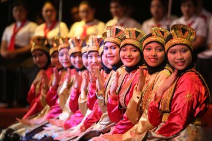
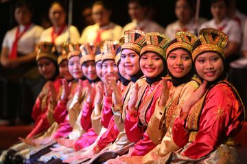

Unit Kegiatan Mahasiswa - Kesenian Tari
UKM Kesenian Tari Universitas Pamulang adalah wadah bagi mahasiswa yang memiliki minat dan bakat dalam seni tari. Di sini, mahasiswa dapat mengembangkan kemampuan tari, belajar berbagai jenis tarian, dan berpartisipasi dalam pertunjukan baik di dalam maupun di luar kampus.
Fasilitas
UKM Kesenian Tari dilengkapi dengan studio tari yang dilengkapi dengan lantai kayu, cermin, dan sistem suara yang baik untuk mendukung latihan dan pertunjukan.
Prestasi
UKM Kesenian Tari Universitas Pamulang telah meraih berbagai prestasi di tingkat lokal, nasional, dan bahkan internasional dalam berbagai kompetisi tari.

 
